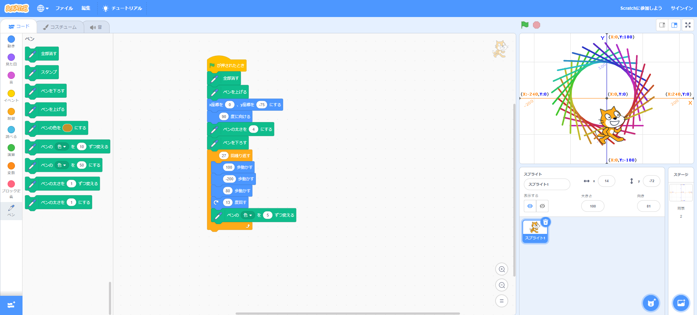
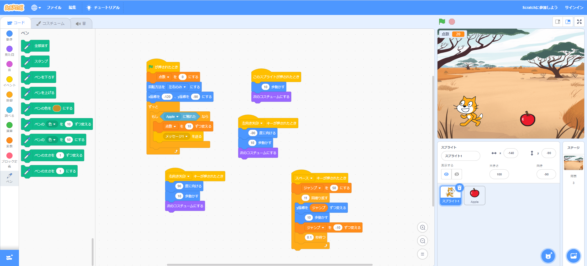

1週目のレポート ： 公大高専１年実習I-1
2B班29番 東 悠雅
第1週目
1-1 サイエンスアート

1.内容
スクラッチを使って線を書くプログラムを作った。
また、ペンの色を変えたり、ペンを持つスプライト
の位置を変えることで、円を描画したりした。
2.感想
円などの描画の仕方が難しいと思った。また、工夫することで楕円形や、双曲線などを作成できそうだと思った。
1-2 ゲーム

1.内容
複数のスプライトを使い、それぞれがぶつかるなどして作用す
るプログラムを作成し、実行した。また、変数を使い点数を付
けるなどした。
2.感想
複数のスプライトを動かすことは容易ではなかったが、スプライト単体だけを動かすより複雑になった。
1-3 ホームページ作成
私のホームページ
1.内容
githubで自分のサイトを作り、サイトの編集やコードのコピー方法を学習した。
また、作ったサイトのurlの作成方法について学習することができた。
2.感想
アカウントを作成することに時間がかかった。また、自分のサイトを作ることが難しかった。